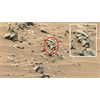

<!DOCTYPE html>
<html lang="en">
 <head>
<!-- Favicon -->
<link rel="shortcut icon" href="../../favicon.ico">
  <meta charset="utf-8"/>
  <title>
   UFO hunter claims NASA Mars photo shows remains of 'ancient alien jet engine'
  </title>
  <meta content="Post on /v/Conspiracy from 2020-07-10 by fluxusp." name="description"/>
  <meta content="UFO hunter claims NASA Mars photo shows remains of 'ancient alien jet engine'" property="og:title"/>
  <meta content="Post on /v/Conspiracy from 2020-07-10 by fluxusp." property="og:description"/>
  <link href="../../static/css/page.css" rel="stylesheet"/>
  <meta content="https://voat.conspiracy.hackliberty.org/thumbnails/c6/36/c6365d9a-c6fe-4015-95e1-1fc901266f31.png" property="og:image"/>
  <meta content="https://voat.conspiracy.hackliberty.org/v/conspiracy/3917648.html" property="og:url"/>
  <meta content="width=device-width, initial-scale=1" name="viewport"/>
  <link href="https://voat.conspiracy.hackliberty.org/v/conspiracy/3917648.html" rel="canonical"/>
  <meta content="article" property="og:type"/>
  <meta content="Voat /v/Conspiracy Archive" property="og:site_name"/>
  <meta content="en_US" property="og:locale"/>
  <meta content="summary_large_image" name="twitter:card"/>
  <meta content="UFO hunter claims NASA Mars photo shows remains of 'ancient alien jet engine'" name="twitter:title"/>
  <meta content="Post on /v/Conspiracy from 2020-07-10 by fluxusp." name="twitter:description"/>
  <meta content="https://voat.conspiracy.hackliberty.org/thumbnails/c6/36/c6365d9a-c6fe-4015-95e1-1fc901266f31.png" name="twitter:image"/>
 </head>
</html>
<body class="dark">
 <div id="container">
  <!-- array (
  'submissionid' => 3917648,
  'creationDate' => '2020-07-10 08:40:39',
  'domain' => 'rt.com',
  'formattedContent' => NULL,
  'isAdult' => 0,
  'isAnonymized' => 0,
  'subverse' => 'Conspiracy',
  'thumbnail' => 'c6365d9a-c6fe-4015-95e1-1fc901266f31.png',
  'title' => 'UFO hunter claims NASA Mars photo shows remains of \'ancient alien jet engine\'',
  'url' => 'https://www.rt.com/news/494289-ancient-alien-engine-mars-ufo-hunter/',
  'userName' => 'fluxusp',
  'archivedLink' => NULL,
  'archivedDomain' => NULL,
  'isDeleted' => 0,
) -->
  <div style="text-align:center; font-size:24px; font-weight:bold;">
   <a href="../../index.html" style="text-decoration: none; color: inherit;">
    Voat /v/Conspiracy Archive
   </a>
  </div>
  <div class="content" role="main">
   <div class="sitetable linklisting" id="siteTable">
    <div class="submission id-3917648 link type-text" id="submission-3917648">
     <a name="submissionTop">
     </a>
     <p class="parent">
     </p>
     <a class="thumbnail may-blank" href="https://www.rt.com/news/494289-ancient-alien-engine-mars-ufo-hunter/" target="_self">
      
     </a>
     <div class="entry unvoted">
      <p class="title">
       <a class="title may-blank" href="https://www.rt.com/news/494289-ancient-alien-engine-mars-ufo-hunter/" tabindex="1" target="_self" title="UFO hunter claims NASA Mars photo shows remains of 'ancient alien jet engine'">
        UFO hunter claims NASA Mars photo shows remains of 'ancient alien jet engine'
       </a>
       <span class="domain">
        (
        <a href="https://archive.searchvoat.co/search.php?d=rt.com">
         rt.com
        </a>
        )
       </span>
      </p>
      <p class="tagline">
       submitted
       <time datetime="2020-07-10T08:40:39+00:00" title="07/10/2020 8:40:39 AM">
        2020-07-10T08:40
       </time>
       by
       <span class="userattrs">
        <a class="author may-blank" href="https://archive.searchvoat.co/search.php?u=fluxusp">
         fluxusp
        </a>
       </span>
      </p>
      <ul class="flat-list buttons">
       <li class="first">
        <a class="comments may-blank" href="https://archive.searchvoat.co/v/Conspiracy/3917648" rel="nofollow">
         1 comment
        </a>
       </li>
      </ul>
     </div>
     <div class="child">
     </div>
     <div class="clearleft">
     </div>
    </div>
    <div class="clearleft">
    </div>
   </div>
   <div class="horizontal-line">
   </div>
   <div class="commentarea">
    <div class="sitetable nestedlisting" id="siteTable">
     <div class="child id-24673237 comment even" style="">
      <div class="entry unvoted">
       <div class="noncollapsed" id="24673237" style=";">
        <p class="tagline">
         <a class="author may-blank" href="https://archive.searchvoat.co/search.php?u=AlternateSelection">
          AlternateSelection
         </a>
         <span class="userattrs">
         </span>
         <time datetime="2020-07-10T10:07:37+00:00" title="7/10/2020 10:07:37 AM">
          2020-07-10T10:07
         </time>
        </p>
        <div class="usertext-body may-blank-within" id="commentContent-24673237">
         <div class="md">
          <p>
           <p>
            Could be tech, could be architecture. I'm one of those people that believes Mars is inhabited right now, but used to be vastly populated in the distant past. Evidence of massive nuclear detonations on the planet suggest a civilization was wiped out by war. I think humans have been on Mars for decades now along with other races but nothing like the vast cities that we see ruined in the sand.
           </p>
          </p>
         </div>
        </div>
        <ul class="flat-list buttons">
         <li class="first">
          <a class="bylink" href="https://archive.searchvoat.co/v/Conspiracy/3917648/24673237" rel="nofollow">
           link
          </a>
         </li>
        </ul>
       </div>
      </div>
     </div>
    </div>
   </div>
  </div>
 </div>
<!-- Footer Section -->
<footer class="container-fluid mt-3">
  <p class="small mb-0">
    /v/conspiracy archive has 42504 posts and 159856 total comments.
    <a href="https://git.hackliberty.org/c0mmando/voat-conspiracy-archive/">source code</a>.
  </p>
</footer>

<script src="../../static/js/jquery-3.7.1.slim.min.js"></script>
<script src="../../static/js/comments-toggle.js"></script>

</body>
